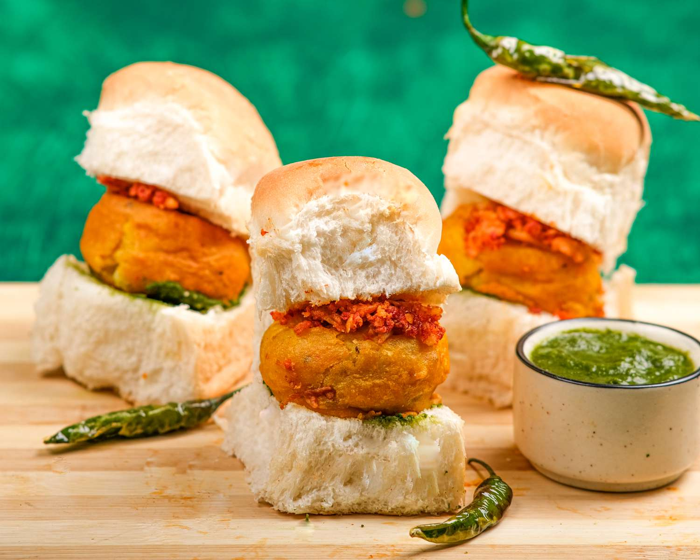
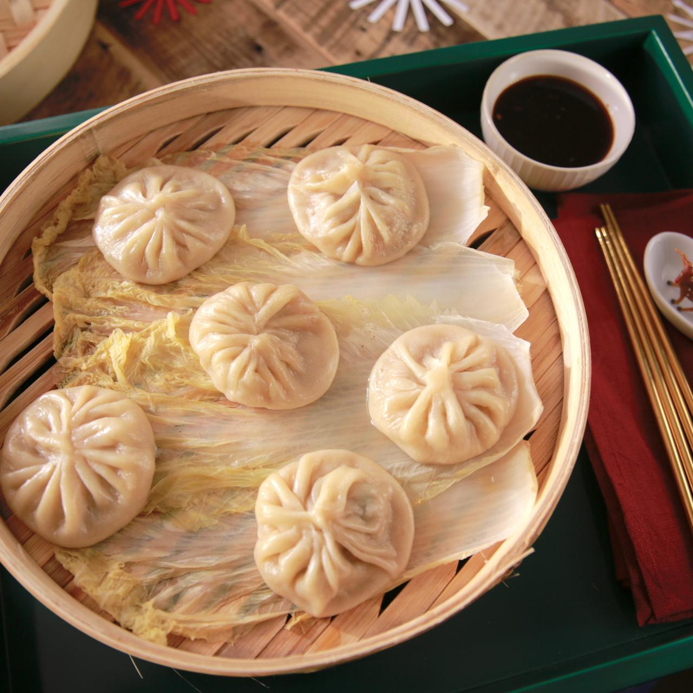
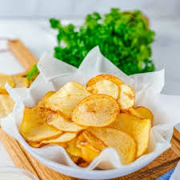
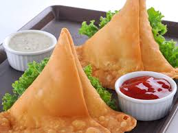

VadaPav
- Step 1: Boil & Mash the Potatoes. Wash and then boil two large potatoes, weighing about 350 grams.
- Step 2: Masala & Potato Preparation.
- Step 3: Batter Preparation
- Step 4: Fry the Vada.
- Step 5: Prepare Buns.
- Finally, place a batata vada over a Pav and top off with a generous amount of Green chutney and Onion.

Dumplings
- Step 1: Make Dumpling Dough. For the dumpling dough.
- Step 2: Prepare the Fillings.
- Step 3: Chicken and Napa Cabbage Filling.
- Step 4: Butternut Squash Filling.
- Step 5: Roll Out the Wrapper.
- Step 6: Filling and Shaping Dumplings.
- Step 7: Cook the Dumplings.
- Step 8: Tips and Variations.

Potato-Chips
- Step 1: Cleaning, washing and destoning.
- Step 2: Peeling.
- Step 3: Slicing and/or trimming.
- Step 4: Frying (continuous or batch)
- Step 5: Salting and seasoning.
- Step 6: Cooling.
- Step 7: Serving or Packaging.
- They are commonly served as a snack, side dish, or appetizer.

Samosa
- Step 1: To make samosas, mix the flour, salt, oil, and water together.
- Step 2: Knead the dough, then cover the bowl and set it aside.
- Step 3: For the filling, toast cumin seeds for 30 seconds in ghee.
- Step 4: then sauté the onion and ginger in the ghee for 5 minutes.
- Step 5: Add garlic, peppers, seasoning, potatoes, and peas and cook for 3 minutes.